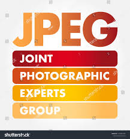

“Artificial intelligence would be the ultimate version of Google. The ultimate search engine that would understand everything on the web. It would understand exactly what you wanted, and it would give you the right thing. We’re nowhere near doing that now. However, we can get incrementally closer to that, and that is basically what we work on.”
—Larry Page
“Artificial intelligence would be the ultimate version of Google. The ultimate search engine that would understand everything on the web. It would understand exactly what you wanted, and it would give you the right thing. We’re nowhere near doing that now. However, we can get incrementally closer to that, and that is basically what we work on.”
—Larry Page

“The development of full artificial intelligence could spell the end of the human race….It would take off on its own, and re-design itself at an ever increasing rate. Humans, who are limited by slow biological evolution, couldn’t compete, and would be superseded.”
— Stephen Hawking told the BBC
“I visualise a time when we will be to robots what dogs are to humans, and I’m rooting for the machines.”
—Claude Shannon

1. JPEG and JPG
It’s important to note that JPEG and JPG are the same file formats, with different acronyms and file extensions. Joint Photographic Experts Group (JPEG) is a raster image with lossy compression.
Its lossy compression means that JPEG eliminates some data to reduce its file size, which decreases its image quality in return. Its relatively small file sizes allow you to save more space on your disk or memory card.